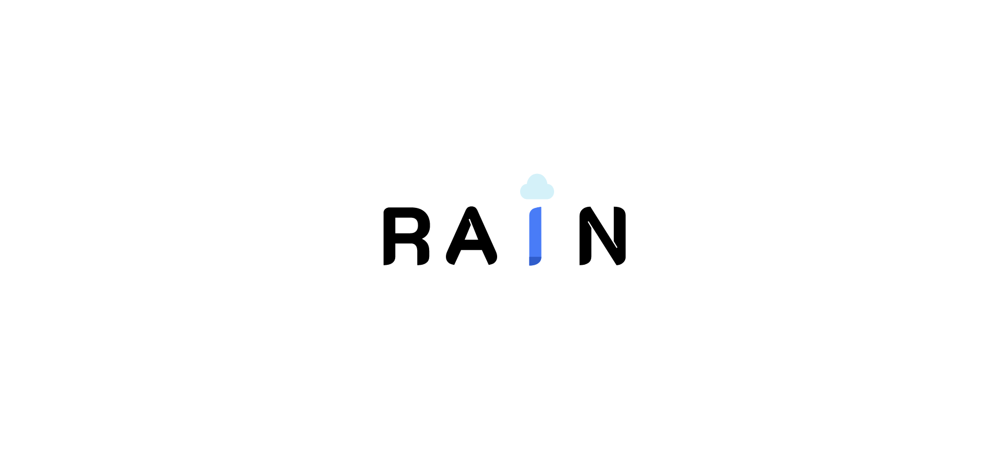

My Projects

Dynamic typography - Groepsopdracht
Front-end, CSS - AnimationsSamen met een groepsgenoot heb ik een dynamische typografie gemaakt waarbij regen valt en de woorden langzaam de vorm van de letter "i" aannemen door opvulling met water.